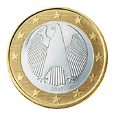

Manuel Apicella
Classe 2D
Progetto Geografia
Questo progetto parla della moneta europea con riferimento alla Germania e alla sua
storia. Si approfondisce anche il significato dei diversi design presenti sulle varie monete
e sul loro significato simbolico e celebrativo.
Simboli

L'euro in Germania e' stato utilizzato come valuta a partire dal 1º gennaio 2002. Ci sono tre design diversi: foglie di quercia per le monete più piccole, la porta di Brandeburgo per quelle di dimensioni medie e l'Aquila federale per le monete più grandi.
I design hanno significati storici, come le foglie di quercia, che risalgono a un trattato del 1837, o il Brandeburgo Tor, che riflette la storia tedesca. L'Aquila federale è lo stemma della Germania dal 1950.
Alcune monete non rispettano le linee guida della Commissione europea, e ci sono state correzioni. È interessante vedere come le monete rappresentino la storia e la cultura del posto.
Significato
Aquila federale

L'Aquila federale è lo stemma statale della Repubblica Federale
tedesca. Si basa sullo stemma della Repubblica di Weimar del 1919 e
ha una lunga tradizione nell'araldica tedesca.
L'aquila era anche lo stemma del Sacro Romano Impero, della
Confederazione Germanica e dell'Impero Tedesco.
Quercia
La foglia di quercia sulle monete tedesche è un simbolo di forza,
longevità e resistenza, rappresentando la stabilità economica e la
solidità della Germania. Usata in epoche storiche cruciali,
simboleggia la resilienza dell'economia e del paese.
Associata a onorificenze militari e civili, riflette anche valore,
coraggio e lealtà. Il suo significato può variare in base al
contesto storico e all'interpretazione simbolica adottata nel corso
del tempo.
Porta di Brandenburgo
La Porta di Brandeburgo è un'icona storica e culturale molto
significativa in Germania, in particolare a Berlino.Costruita nel
XVIII secolo come simbolo di pace e tolleranza, è diventata un'icona
nazionale, soprattutto dopo la riunificazione della Germania nel
1990.
La sua presenza sulle monete può simboleggiare l'unità nazionale, la
libertà e la storia condivisa del paese. La Porta di Brandeburgo è
un monumento di grande importanza culturale che evoca valori di
unità e libertà nella storia tedesca.
Monete Commemorative
La moneta commemorativa tedesca del 25º anniversario della riunificazione con l'ex DDR è un simbolo della storica unificazione della Germania avvenuta nel 1990. Celebra un momento significativo, segnando il completamento di un lungo percorso verso la riunificazione nazionale dopo la caduta del Muro di Berlino nel 1989.
Questa moneta presentare l'immagine dell'umanista e teologo olandese
Erasmo da Rotterdam, che viaggiò diversi anni in tutta Europa per
comprenderne le differenti culture.
La moneta simboleggia l'importanza dell'istruzione internazionale,
dell'interculturalità e della collaborazione tra nazioni europee
nell'ambito del programma Erasmus.
Nel 2006 la Germania ha dato il via a una serie di monete commemorative da 2 euro dedicata ai 16 Stati della Repubblica Federale di Germania. Per commemorare la citta' stato di Berlino e' stato scelto il castello di Charlottenburg. Questo castello, uno dei simboli culturali della città, e' stato scelto per rappresentare la ricchezza storica e artistica della capitale tedesca